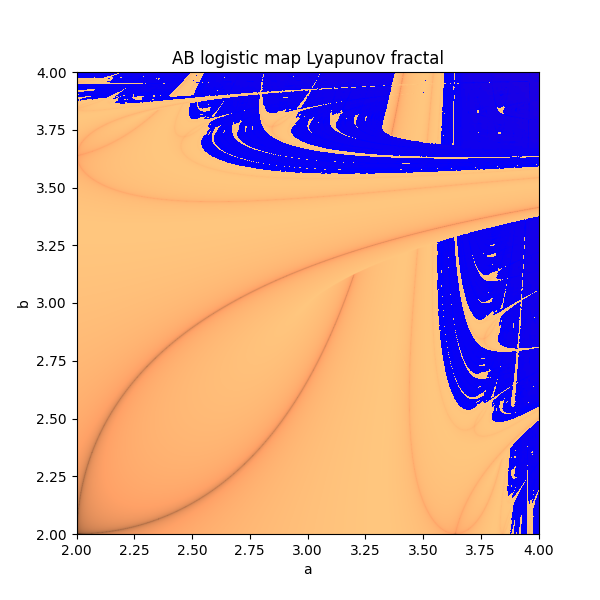

homepage
coding shit
a collection of fractals i made in python
hopefully you find this cool/learn something
last updated: 1/11/25
Chaos Game
the chaos game is very simple. you have N vertices, normally arranged in a regular N-gon. each vertex is assigned a probability, lets say 1/N.
now starting at a random point. pick a random vertex based on the probabilities and move to the point halfway between your current position and that vertex.
repeat.
if done with 3 points you get the famous Sierpiński triangle.
you can do this to create a fractal with any number of points except 4. this happens because the quadrants of a square are identical to the larger square.
so no matter where the point is, it is possible to move to any other quadrant.
as a result of this there is a series of steps which can move between any two points
inside the square, which means eventually every point will be reached. this does not happen with any other shape.
the larger N is the more unclear the fractal pattern is.
next i thought what if i didnt allow it to pick the same point twice in a row.
very cool, 3 points is no longer connected, 4 now has fractal behaviour and 5 just looks awesome.
next at step i didnt let it pick the vertex to its right.


quite nice i especially like the 10 point one in this case. i did some other stuff but nothing i had not seen elsewhere.
last thing on the chaos game, the Barnsley fern.


i cbf explaining it here but check out the wiki, really intuitive explanation.
with just a few tweaks, i modified it to make a tree. tree could be improved.
i find this super interesting because i think it is representative of what happens in nature.
its easier to store a couple equations and have the ability to build from scratch, rather then have to copy and store the entire plan every new generation.
Mandelbrot Set + other similar
the most famous fractal, the Mandelbrot Set, i remember watching "10e24 deepest mandelbrot zoom ever" videos on youtube as a kid.
then you learn the process making all that complexity is literally one equation z = z^2 + c.
anyway everyone seen it already so im not gonna show my low res python generated version, but i will show some related fractals.
perhaps the best known of these is the burning ship. it is generated by squaring the sum of the real and complex components of z. z = (Re(z) + Im(z)j)^2 + c

btw if you zoom in at (-1.75, 0j) you will see the burning ship. what if i change the exponent of the burning ship?

it looks contnuous i wonder if i can animate it morphing between them? this is z = (Re(z) + Im(z)j)^m + c with m from 1 to 6 and the original z = z^m + c with m = 1 to 5
so then i think why limit myself to only changing the exponent and started putting some really weird equations in the original mandelbrot iteration formula.


Newton fractals
check out 3blue1brown video on newton fractals, it is what inspired me to try.
the premise is based on newtons method for solving the roots of a polynimial but applied to a complex funciton.
so for each point in the complex plane apply newtons method iteratively. this will end up at one the roots of the equation. if we then colour each point based on which root it ended up, you get some pretty cool shapes.

i tried with lots of other equations, some using complex coefficients, etc. here are some.
.png)

but i want to try make an animation like i did for mandelbrot. i think more about how i want to do this, maybe morph from one equation to another, by moving a root?
Markus-Lyapunov fractals
these are maybe my favourite fractal.
to understand the Lyapunov fractal, you have to start with the iterative process beneath.
in this case the logistic map: xn+1 = rxn(1 - xn). there has been lots of research into this and there are plenty of good youtube vids or articles on this topic.


this is bifurcation diagram of the logistic map. so each blue dot represents a "stable" solution (xn for really large n) at a corresponding growth rate (r). the area r>3.5ish is a region (mostly) without stable points.
so a good way to think about it is as a model of population. so the population starts at some number between 0 and 1. where 0 is extinct and 1 is "maximum capacity", we dont actually need to know this just imagine its normalised.
for a generation xn, the size of the next generation is xn+1 = r*xn(1-xn).
the above diagram shows the stablising value for each r in {0, 4}. youll notice that 3ish < r < 3.55ish there are multiple stabilising values and beyond that it is seemingly random (chaotic).


so what if you alternated between 2 r values a and b at each generation? well you will again result in a system which is either stable or chaotic and this can be described by the Lyapunov exponent.
the Lyapunov exponent is effectively a measure of "how chaotic" a system is, so a negative exponent means stability (gold-->black) and a positive exponent represent chaos (blue-->red).
if you calculate this value for every pair 0 < a, b < 4, and plot you get the Markus-Lyapunov fractal. i tried to recreate a colour scheme similar to the original as it best displays the border between zones of stability and chaos.

rather then just alternating suppose you used a or b depending on some sequence, eg. ABBBAAABA . well this will give a new Lyapunov fractal.
and then finally you can you different iterative equation other then the logistic map, as long it remains bounded between 0 and 1.
the most interesting area is normally in the top right area of the board. so my pictures focus around that area.
these r some cool ones i made


Gravity fractals
these are the first fractals i thought of on my own. ofc a quick google search showed this was not an original fractal.
the premise is similar to the newton fractal. pick N points on the plane to act as sinks (black holes).
then for every point on the plane imagine it is a planet and colour that point depending on which sink it ends at.